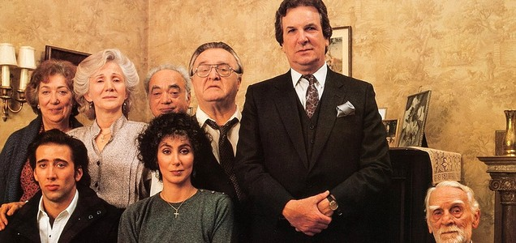
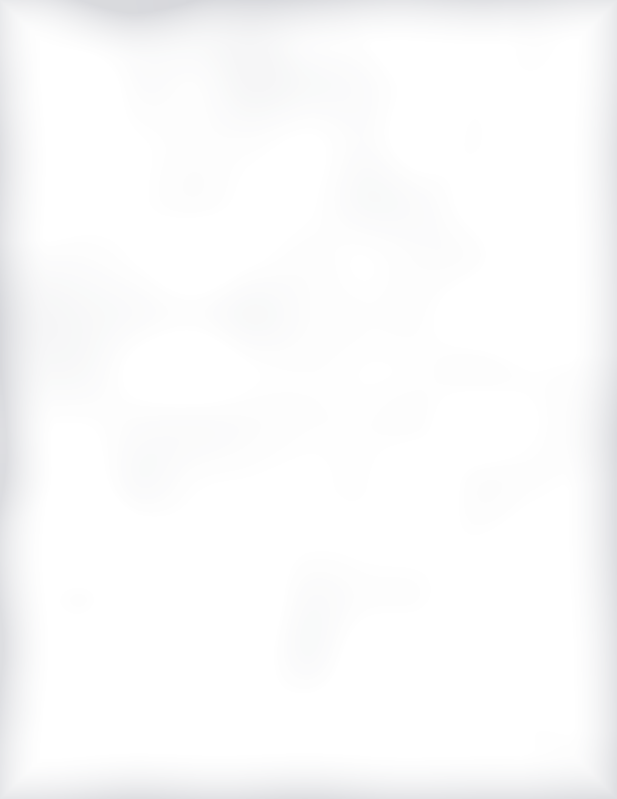

Late supper after the opera
Il menu
Il Gran
Lunario
Lunario
Antipasti
Rosemary focaccia2.50
From a Brooklyn baker, dimpled with olive oil and coarse salt. Cut by hand.
Mozzarella in carrozza4.75
Fried golden in an egg batter, anchovy and caper sauce.
Stuffed artichoke5.25
Breadcrumbs, pecorino and garlic, steamed tender.
Dolci
Cannoli, two3.50
Ricotta, sugar and orange zest in chocolate dipped shells, filled to order.
Espresso1.25
Short and black. Snap out of it.
Late supper
Eggs in the hole4.25
White toast fried in butter, an egg set in a ring of red pepper, yolk soft.
Dal bar
Amaretto sour3.75
Shaken frothy with lemon and egg white, over ice, a cherry on top.
Champagne19.87
The bottle, for a toast to la famiglia.

Regulars. The whole family, on our wall.
From the ovens
The bread on your table comes over the bridge from my ovens every afternoon. Eat it warm. I’ll be at the opera.
Ronny, your baker
Thompson St., N.Y. 10012. (212) 555-1987. Proposals taken on one knee.Prices subject to change.
